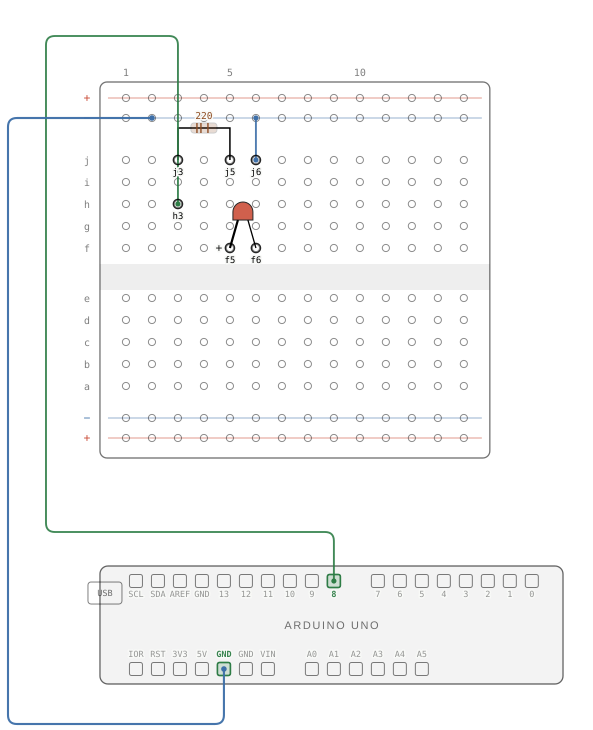

Not linked from the site. Each build shows the flat SVG from tools/wiring/ and then the 3D view made from the same data. Add ?b=b1p5,b5p4 to the address to choose builds, &lowpower to force the old-PC settings, &theme=dark for the dark theme. At the end is a copy of a page figure with the View in 3D button, as tools/inject_3d.py writes it.
